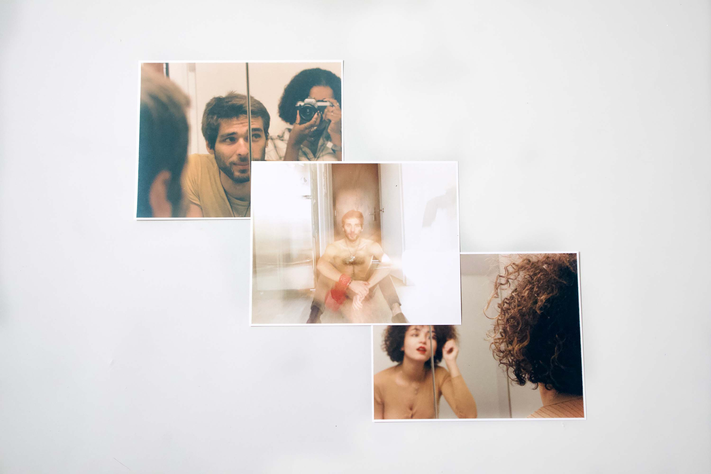
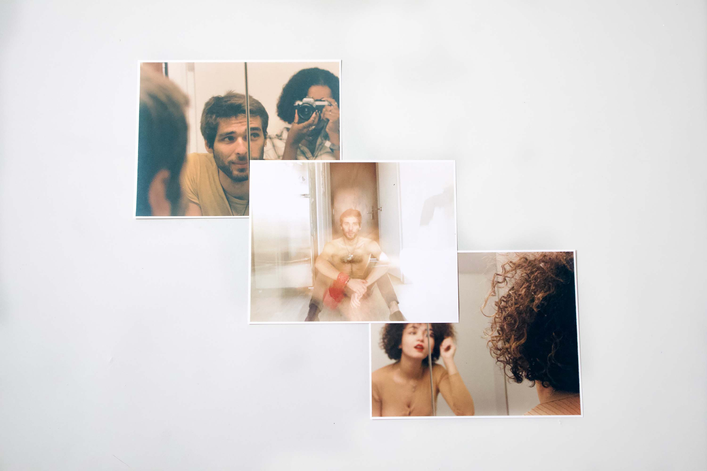

Décorps
I find great beauty in the human body. This assembly of bones, joints, muscles, organs, vessels, tissues that shape a person. This natural phenomenon that finds its magic in its uniqueness. From similar systems, no two bodies are the same.
Studying dance and anatomy made me used to analysing the body in movement or as dissected. With photography, I found a new way to explore it.
Photographing various close ups of the upper body allowed me to capture and appreciate the details of the surface of a body. The hairs that react to the environment or emotions of a person, the skin imperfections that communicate their history, the bone and muscle structures that reflect their singularity.
Décorps expresses the diversity of the seasons in Canada. The shift in brightness and colors from September to December. Therefore, the visual outcome of the series varies in terms of colors and exposure.
My photography project expresses the beauty I see in the human body, and its reflection of and response to its environment.


 
